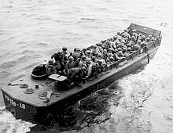

What is the Marine Corps?
The Marine Corps is responsible for keeping guard of the United States of America and its surroundings over land and water. The Marine Corps also takes part with the United States Navy in international operations all over the globe. The USMC (United States Marine Corps) has been part of the United States Department of Defense since 10 November 1775 (249 years, 3 months).

Biggest Achievement
The biggest achievement made by the Marine Corps was the invention or making of the Higgins Boat. The Higgins Boat helped the US Marine Corps during World War 2 as it served as a quick and affordable way to deliver marine troops to shore. The Higgins Boat is a simple boat with higher walls around it and one big gate in the front that would come down once it hit the shore. The Higgins Boat ws created in the 1930s by entrepreneur and engineer Andrew Jackson Higgins.
Higgins Boat With Marines On Board
How to Join The Marine Corps?
To enlist in the Marine Corps, there are 2 career choices you can access:
- Recruit Training - The first phase to become a US Marine, is to go to Recruit Training where you will go through 4 phases where you will learn all of the basics such as hand-to-hand combat, rifle issued, etc.
- Officer Candidate School - After Recruit Training, you will then have the option to go to Officer Candidate School and become a more experienced marine and this will help you when you get farther into your career as you will begin as a higher rank and your income will be greater than at the beginning.
For more information you can visit .com